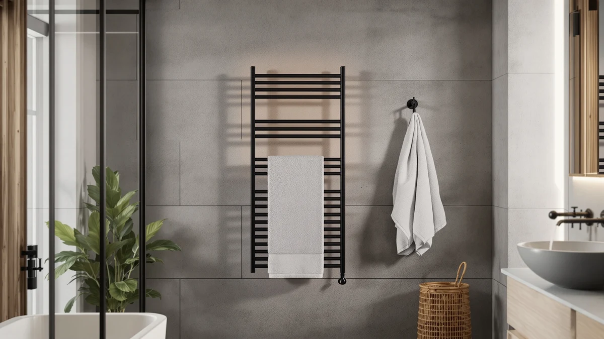

Towel Warmer Sizing Guide (2026)
Prices and picks verified as of August 2026. Independent, reader-supported reviews.


Things to Know Before You Buy
- A standard US bath towel measures 30 by 56 inches, and a bath sheet runs closer to 35 by 60 inches, so check your own towels before you check a warmer's rail length.
- Rail-style warmers list capacity by bar count, not inches, and each bar typically holds one folded towel or two hand towels.
- Bucket-style warmers heat one towel at a time regardless of size, which makes interior depth more important than overall width.
- Wall-mounted and hardwired units need a clearance zone of several inches on each side for airflow and safe folding.
- A unit sized for one person rarely covers a family of four, so match the warmer to your household count rather than your bathroom's square footage.
A good towel warmer sizing guide starts with a tape measure, not a product page, because the numbers on a listing rarely tell you whether a rail will hold two bath sheets or a single hand towel. Get the size wrong and you end up with a warmer that swallows your countertop or can't hold enough towels for your household.
Most bathrooms in the US hold two to four bath towels in daily rotation, plus hand towels and washcloths that never make it onto a warmer at all. A single adult living alone can get by with a compact bucket warmer that heats one towel at a time, while a family of four needs a wider rail or a two-tier unit that handles several towels at once. Manufacturers rarely spell out capacity clearly, so you have to work backward from your own towel count and the wall or counter space you actually have.
This guide breaks down towel dimensions, unit types, and the measurements that matter most, then covers the mistakes that send buyers back to Amazon for a return label. By the end, you will know exactly what to measure before you add a towel warmer to your cart.
What You Need to Know
Before you shop, measure the towels you already own. A standard US bath towel runs about 30 by 56 inches, a hand towel is closer to 16 by 28 inches, and an oversized bath sheet can stretch to 35 by 66 inches. Any towel warmer sizing decision starts with these numbers, because a rail rated for "large towels" by one brand may only fit a hand towel folded in thirds by another.
Look past the marketing copy and check the actual rail length or bucket interior in inches, listed in the specifications rather than the title. A rail under 20 inches wide struggles with a folded bath sheet, while anything over 27 inches comfortably holds a bath towel folded in half. Bucket warmers list interior height and diameter instead, since the towel wraps around a heating core rather than draping over bars.
Wattage tracks loosely with size. A compact single-towel bucket warmer typically draws 100 to 150 watts, while a wide multi-bar rail built for two or three towels can pull 200 watts or more. A higher-wattage unit heats a larger warmer about as quickly as a lower-wattage unit heats a small one, so treat wattage as a rough size indicator, not a quality signal.
Finally, measure your installation space before your towels. A freestanding unit needs floor clearance on every side, a wall-mounted rack needs stud spacing and swing room for the door or towel bar, and a hardwired model needs an electrician's sign-off on the wall cavity behind it.
Types and Categories
Towel warmers split into three main categories, and each one comes with its own size logic. Freestanding units stand on the floor or a countertop and range from compact single-towel buckets around 12 inches tall to tower-style racks that hold three or four towels across multiple bars. Because they need no wiring or wall mounting, they suit renters and anyone who wants to reposition the warmer between bathroom, closet, or hot tub deck.
Wall-mounted racks bolt to a wall or door and typically run 18 to 30 inches wide, with bar counts from four to twelve. Width is the number that matters here, since a narrow 18-inch rack fits a half bath but crowds two bath sheets, while a 30-inch model spans a double vanity wall with room for a full family's towels.
Hardwired units wire directly into house current and skip the visible cord, which lets manufacturers build wider, heavier racks without worrying about outlet placement. These run largest on average, often 24 to 36 inches, and suit primary bathrooms where the extra installation cost buys permanent capacity.
A fourth category, drawer-style warmers, hides the heating element inside a cabinet drawer sized to match standard vanity dimensions, usually 20 to 30 inches. Getting the towel warmer sizing right in a drawer unit matters even more, because an oversized towel will not close the drawer, while a small drawer wastes the extra space you paid for.
How to Choose
Start with a head count. One person living alone rarely needs more than a single-towel bucket warmer or a narrow two-bar rail, since only one towel is in rotation at a time. A couple should look at a four-bar rail or a two-towel bucket, and a family of four or more benefits from a wide wall-mounted or hardwired rack with six or more bars, so towels are not competing for space.
Next, measure your towels, not the ones pictured on the product page. Lay your largest bath sheet flat and note its folded width, then compare that number against the rail length or bucket diameter listed in the specifications. This single step matters more than anything else in towel warmer sizing, and skipping it is the most common reason buyers end up returning a unit that looked right in photos.
Then measure your space. Wall-mounted and hardwired units need a flat wall section free of outlets, tile trim, or a door swing, plus a few inches of clearance above and below for safe airflow. Freestanding units need floor or counter footprint, including room to open a bucket lid or lift a towel off a bar without bumping the sink or shower door.
Finally, weigh capacity against your bathroom's actual traffic. A guest bathroom used a few times a month does not need the same capacity as a primary bathroom used by four people every morning. Buying the largest available unit rarely helps if only one or two towels are ever in rotation, and it adds cost and wall space you do not need. Match the warmer to how the bathroom is used, not to the biggest model in a comparison chart.
Common Mistakes to Avoid
The most common mistake is sizing for the bathroom instead of the household. Buyers see a compact unit that fits neatly next to the sink and assume it works for everyone in the house, then discover it only holds one towel when three people shower before work. Count your household and your daily towel rotation before you count inches of wall space.
A second mistake is skipping the clearance check. A wall-mounted rack that measures 24 inches wide also needs room on each side to lift a towel off the bar, and a bucket warmer needs its lid to open fully without hitting a mirror or shelf above it. Buyers who measure only the unit itself, not the space around it, end up with a warmer they cannot use comfortably.
A third mistake is confusing wattage with capacity. A higher-wattage listing does not reliably signal a bigger warmer, since some brands raise wattage on small units to heat faster rather than to hold more towels. Check the physical dimensions in the listing, not the wattage figure, when capacity is the goal.
Last, buyers often ignore bar spacing. A rack with narrow gaps between bars packs towels tightly and can trap moisture, slowing the dry time a warmer is supposed to speed up. Wider spacing between fewer bars often dries towels faster than tight spacing between many thin ones.
Care and Maintenance
Once you have the right size in place, upkeep is minimal. Wipe bars or the bucket interior every week or two with a damp microfiber cloth, since body oils and hard-water residue build up faster on units that run warm most of the day. A wider rack has more surface area to wipe, so factor a few extra minutes into your routine if you sized up for a larger household.
Check the cord and plug on plug-in and freestanding models every few months, especially on wider units where the cord runs a longer distance to the outlet. Fraying or heat damage near the plug is a sign to stop using the unit and replace it rather than risk a shock or fire hazard. Hardwired units should have their breaker checked by an electrician if it trips repeatedly.
Avoid overloading a warmer sized for two towels with three or four, since crowded bars trap moisture between towels and slow drying instead of speeding it up. If your household has grown since you bought your current unit, it is often cheaper to add a second smaller warmer than to replace one that is now too small.
Descale bucket-style warmers once or twice a year if you have hard water, using a diluted vinegar rinse on the interior. This keeps the heating element working efficiently regardless of the unit's size.
Our Top Picks
If you have measured your towels and your wall space, these three picks cover a fragrance accessory that fits any bucket-style warmer and two SereneLife warmers sized for different bathroom counts.

Editor’s Pick
Demissle Replacement Fragrance Disc Towel
These fragrance discs drop into the base of any bucket-style towel warmer regardless of its capacity, adding a light scent to towels as they heat. They are a low-cost way to get more out of a warmer you already own rather than a sizing decision on their own.
$13.99
Check Price on Amazon
Best Value
SereneLife Luxury Rectangle Towel Warmer
This rectangular bucket warmer holds one folded bath towel at a time and suits a single bathroom used by one or two people. Its interior is deep enough for a full bath sheet, so measure your largest towel against the listed dimensions before you buy.
$99.99
Check Price on Amazon
Premium Choice
SereneLife Counter Towel Warmer Bucket
This counter-style bucket sits flat on a vanity or shelf and takes up less footprint than a rectangular model. That makes it the better fit for a small bathroom where counter space is tight. Capacity still tops out at one towel, so a household with more than two people will likely want a second unit.
$74.99
Check Price on AmazonWhat size towel warmer do I need for one bath towel?
A single-towel bucket warmer with an interior around 6 to 8 inches in diameter fits most standard 30 by 56 inch bath towels folded in thirds.
How do I measure for a wall-mounted towel warmer?
Measure the flat wall space you have available, then subtract a few inches on each side for clearance to lift towels off the bars.
Frequently Asked Questions
What size towel warmer do I need for one bath towel?
A single-towel bucket warmer with an interior around 6 to 8 inches in diameter fits most standard 30 by 56 inch bath towels folded in thirds. If you regularly use an oversized bath sheet, check the listed interior depth, since some compact buckets only accommodate a hand towel comfortably.
How do I measure for a wall-mounted towel warmer?
Measure the flat wall space you have available, then subtract a few inches on each side for clearance to lift towels off the bars. A rail between 20 and 24 inches wide fits most single-sink bathrooms, while a double vanity wall can usually support a 28 to 30 inch rack.
Can one towel warmer size fit a family of four?
Rarely. A single-towel bucket or a narrow two-bar rail works for one or two people, but a household of four needs a wide wall-mounted rack with six or more bars, or two smaller units in different bathrooms, to keep every towel warm at once.
Does wattage tell me anything about towel warmer size?
Not reliably. Wattage relates to heating speed more than capacity, and some brands raise wattage on compact units so they heat faster rather than hold more towels. Check the physical dimensions in the product specifications instead of the wattage number when sizing is your priority.
What is the biggest sizing mistake buyers make?
Sizing the warmer to the bathroom instead of the household. A unit that fits neatly next to the sink can still be too small once three people are sharing it every morning. Any reliable towel warmer sizing guide starts with a towel and household count, then works backward to the unit dimensions, not the other way around.
Verdict
A towel warmer sizing guide comes down to three numbers: how many towels you use each day, how wide your rail or bucket needs to be to hold them, and how much wall or counter space you actually have free. Measure your largest bath towel before you measure the product page, because listed capacity varies more between brands than most buyers expect. A single-towel bucket like the SereneLife models covers one or two people, while a household of four needs a wider rail with six or more bars or a second unit in another bathroom. Add a Demissle fragrance disc to any bucket-style warmer once you have the right size in place, since scent is a bonus feature, not a sizing decision. Skip the marketing language about "large" or "family-size" and check the inches instead. Get the towel warmer sizing right the first time, and the unit disappears into your routine instead of becoming another return label headed back to Amazon.